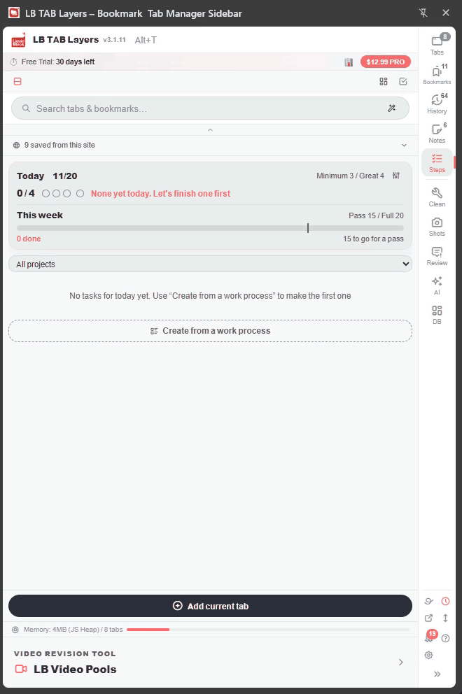
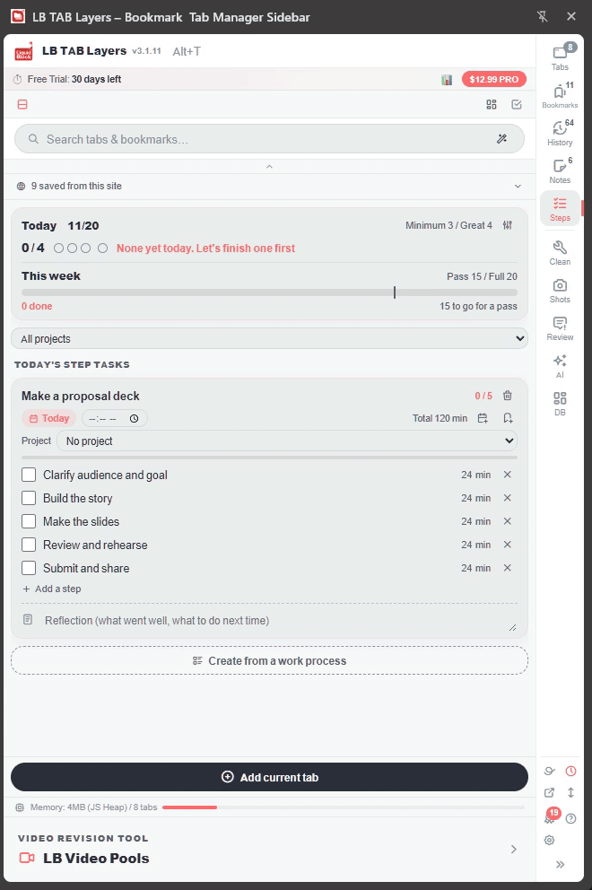
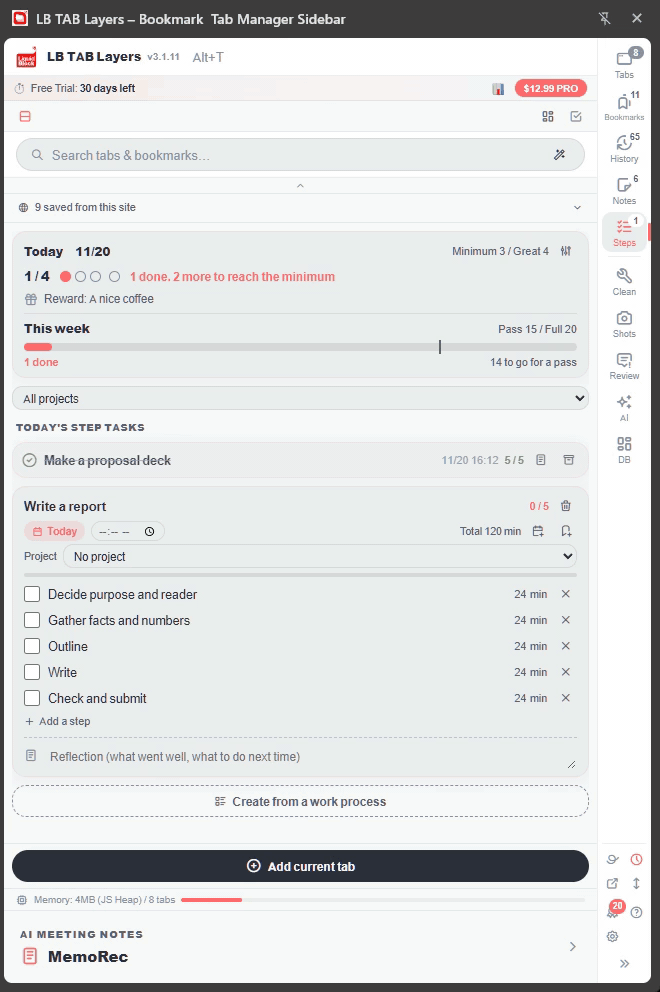
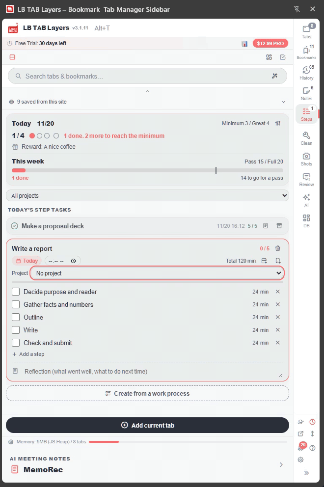
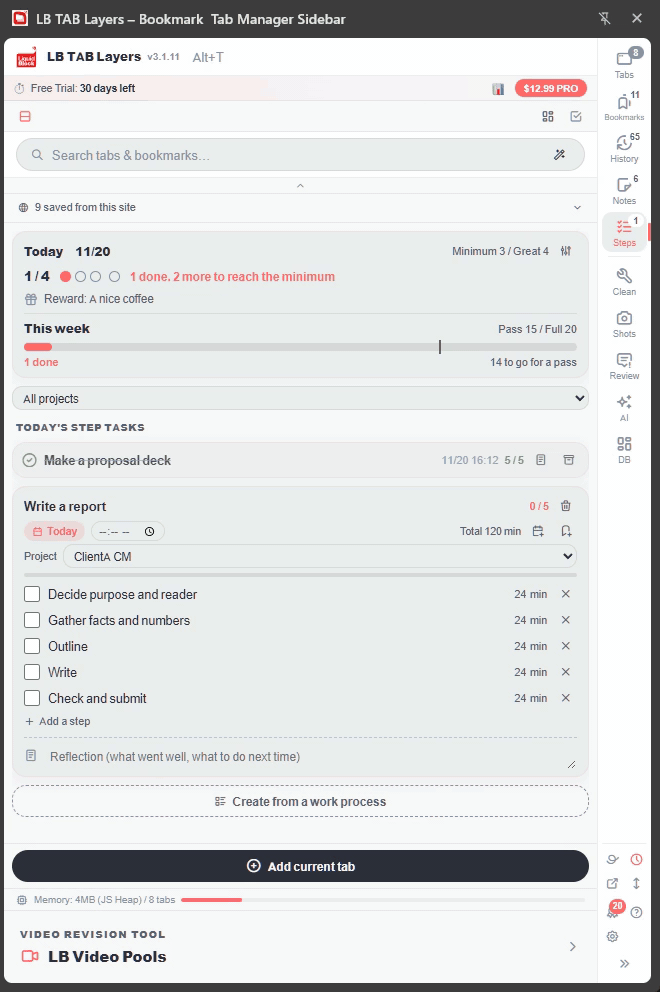
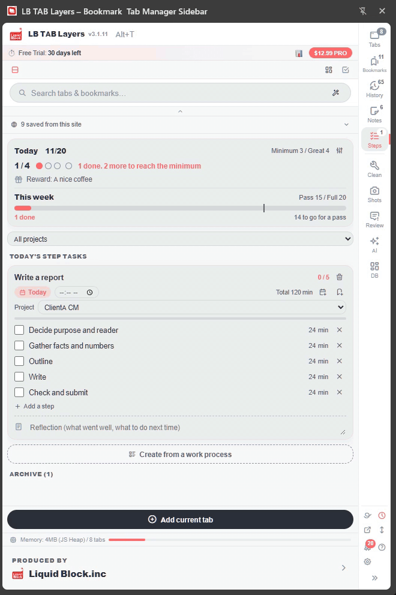
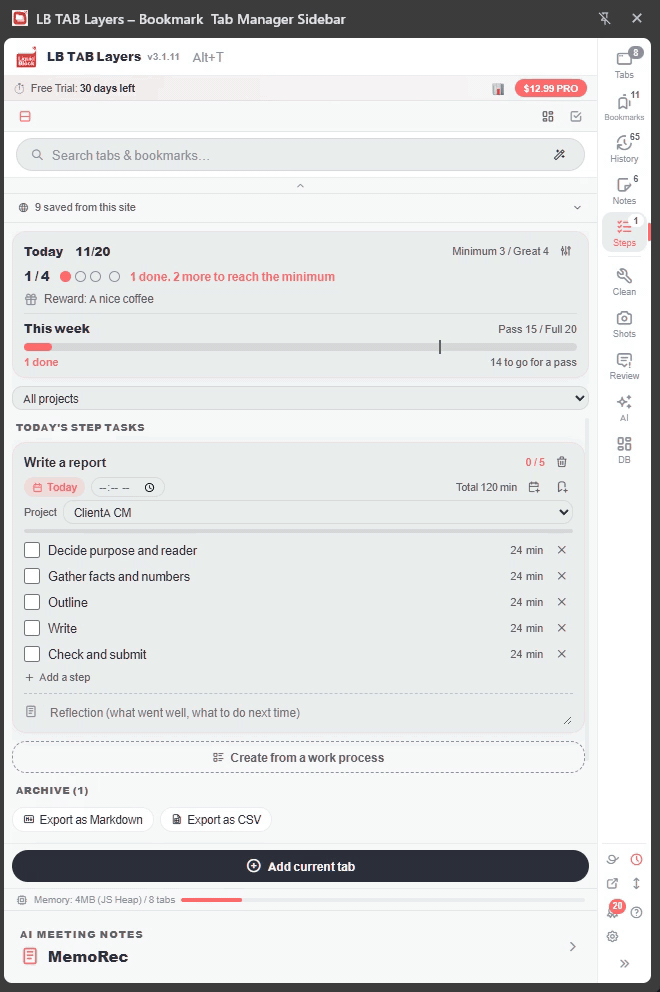

For people who want to get through multi-step work without missing anything, and see how far they got today as a number.
Create from a template PRO
Choose a kind of work (10 categories, 34 templates) and get a task with the steps lined up
Where: “Steps” › “Create from a work process”
Click “Create from a work process” in the Steps view and choose from 34 templates in 10 categories to create a task. Before creating it, you can set the number of steps, the estimated time, the day to do it and the project (group).

Choose a kind of work and the steps line up in order. There are 34 templates.
Work through the steps PRO
Check them off one by one. When all are done, the task is complete, with a little celebration
Where: The task card
Tick the checkbox at the left of each step as you go. When every step is checked, the task is complete. “Today” and “This week” at the top show how many you've completed.

Check off the steps one by one. When they're all done, that's one task complete.
Goals & rewards PRO
Set a daily and a weekly goal, and a reward for yourself
Where: The gear
Use the gear to set your daily and weekly goals, and a reward for yourself when you reach them. The reward appears in the summary at the top and in the celebration.
Set a daily and a weekly goal, and a reward for yourself when you get there.
Date & start time PRO
Choose the day to do it. Tasks are sorted into today, carried over and no date
Where: The date on the card
Use the date on the card to choose the day to do it. Tasks are listed under Today, Carried over, and No date / upcoming. Once a date is set, you can add a start time too.

Use the date to choose the day. Set a later day and the task moves to upcoming.
Link to a project PRO
Attach a task to a group. Filter by group
Where: The card / the filter at the top
You can attach a task to a group (a project). Use the filter at the top to view tasks project by project. The group's header also shows the number of tasks remaining.

Attach a task to a project's group, and filter the list by project.
Reflection PRO
A note for each task. A summary of last week's count
Where: The card / the card at the top
Leave a reflection note on each task. The card at the top summarizes how many you got through last week. PRO feature (available during the free trial).
Complete & archive PRO
Put finished tasks away. Export as Markdown or CSV
Where: Archive at the bottom
Completed tasks can be put away in the archive. The archive is listed by completion date and can be exported as Markdown or CSV.

Completed tasks can be put away in the archive.

The archive is listed by the day each task was completed.
My templates PRO
Save your own steps as a template, then export and import it
Where: The card / the template screen
Save the current task's steps as your own template. Your templates can be exported to a file and imported on another computer.

Keep your current steps as a template of your own.
Add to Google Calendar PRO
Hand a task to the calendar's new-event screen
Where: The calendar button on the card
Click the calendar button on a card to open Google Calendar's new-event screen with the task's name, date and time filled in. You decide there whether to save it. PRO feature (available during the free trial).